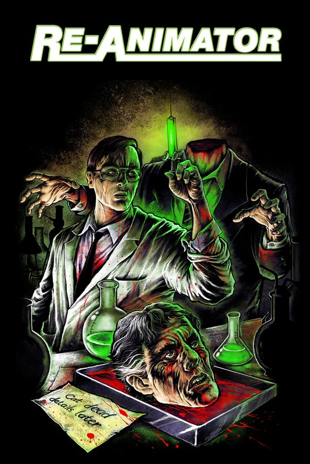
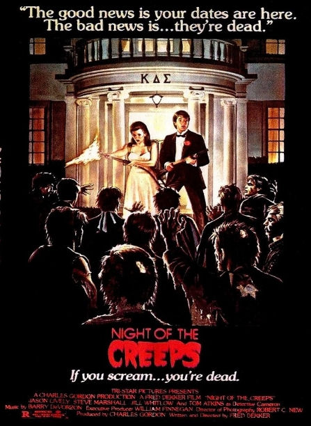
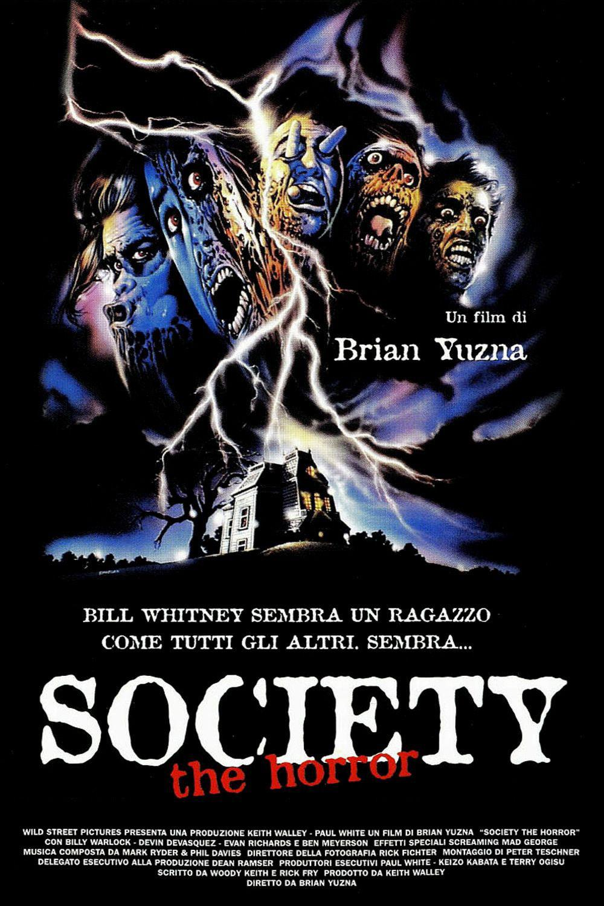

Desconhecidos Aterrorizantes: Joias Obscuras do Terror dos Anos 80 e 90
Os anos 80 e 90 foram décadas de ouro para o terror, repletas de clássicos que definiram o gênero. No entanto, por trás dos grandes sucessos, espreitam filmes que, por diversos motivos, não alcançaram o mesmo reconhecimento, mas que são verdadeiras **joias obscuras** para os fãs mais dedicados. Prepare-se para mergulhar em alguns desses títulos esquecidos que merecem sua atenção (e seus calafrios)!



O Que Define um "Desconhecido Aterrorizante"?
Não estamos falando de filmes ruins, longe disso! "Desconhecidos Aterrorizantes" são aquelas produções que, apesar de sua qualidade, originalidade ou impacto, ficaram à sombra de blockbusters. Podem ser filmes independentes, com orçamentos modestos, ou simplesmente títulos que não tiveram a mesma distribuição e marketing. A verdade é que muitos deles oferecem uma experiência única, fugindo dos clichês e explorando novas facetas do medo.
Por Que Assistir a Esses Filmes?
- **Originalidade:** Muitos desses filmes ousaram em suas narrativas e conceitos, sem a pressão de seguir fórmulas.
- **Atmosfera Única:** Eles frequentemente constroem uma atmosfera de terror mais densa e perturbadora, confiando menos em sustos baratos.
- **Descoberta:** Há um prazer genuíno em desenterrar um "tesouro" cinematográfico que poucos conhecem.
- **Perspectiva Histórica:** Observar esses filmes nos permite entender a evolução do terror e as tendências da época.
Mergulhe no Obscuro: Nossas Recomendações!
1. Re-Animator (1985)
**Sinopse:** Baseado na obra de H.P. Lovecraft, o brilhante, mas excêntrico, estudante de medicina Herbert West desenvolve um reagente que pode reanimar tecidos mortos. Suas experiências em cadáveres se tornam cada vez mais grotescas e incontroláveis, arrastando seu colega de quarto e a noiva dele para um pesadelo de horror e humor negro.
Um filme cult clássico que mistura **gore explícito, humor macabro e uma pitada de ficção científica**. Seus efeitos práticos e a atuação insana de Jeffrey Combs como West o tornam inesquecível.
2. A Noite dos Arrepios (Night of the Creeps - 1986)
**Sinopse:** Um parasita espacial que transforma suas vítimas em zumbis sedentos por cérebros escapa e aterroriza um campus universitário. Dois estudantes desajustados e um detetive ranzinza devem lutar contra a infestação alienígena para salvar o dia.
Uma divertida homenagem aos filmes B dos anos 50, com **humor sarcástico, referências inteligentes e zumbis que explodem**. É um "terror de criatura" com muita personalidade.
3. Society (1989)
**Sinopse:** Bill Whitney, um jovem de classe alta, começa a desconfiar de que sua rica e aparentemente perfeita família esconde um segredo perturbador. À medida que ele investiga, descobre que os membros da elite social de Beverly Hills estão envolvidos em algo grotesco e inimaginável, uma sociedade secreta com rituais bizarros e repulsivos.
Este filme é um mergulho no **body horror e na sátira social**, com efeitos visuais chocantes e uma crítica afiada à elite. É um filme verdadeiramente bizarro e perturbador que fica na mente.
4. Candyman (1992)
**Sinopse:** Uma estudante de pós-graduação investiga a lenda urbana de Candyman, um espírito vingativo com um gancho no lugar de uma das mãos, que aparece quando seu nome é repetido cinco vezes no espelho. Ela mergulha em um mundo de história brutal, racismo e terror sobrenatural, descobrindo uma conexão aterrorizante com a lenda.
Baseado em uma obra de Clive Barker, este é um filme de terror psicológico com um vilão icônico, uma atmosfera densa e uma **crítica social potente** sobre a história e os medos urbanos. É um terror elegante e assustador.
5. Os Desconhecidos (The Strangers - 2008)
**Sinopse:** Um casal em crise tem sua casa de veraneio invadida por três figuras mascaradas e desconhecidas que os aterrorizam sem motivo aparente. O horror reside na falta de explicação e na aleatoriedade da violência.
Embora seja de 2008, seu estilo minimalista, focado na **tensão e no medo do desconhecido**, remete à brutalidade e à falta de lógica de muitos filmes dos anos 80 e 90, tornando-o um "desconhecido aterrorizante" moderno que vale a pena conferir.
A busca por essas joias é uma jornada recompensadora. Ao invés de revisitar sempre os mesmos títulos, dê uma chance aos "desconhecidos aterrorizantes" dos anos 80 e 90 (e alguns além)! Você pode se surpreender e encontrar seu próximo filme de terror favorito.